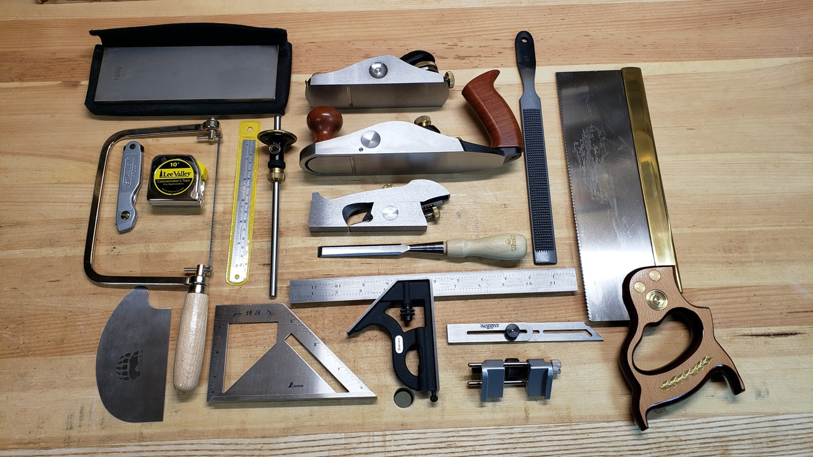
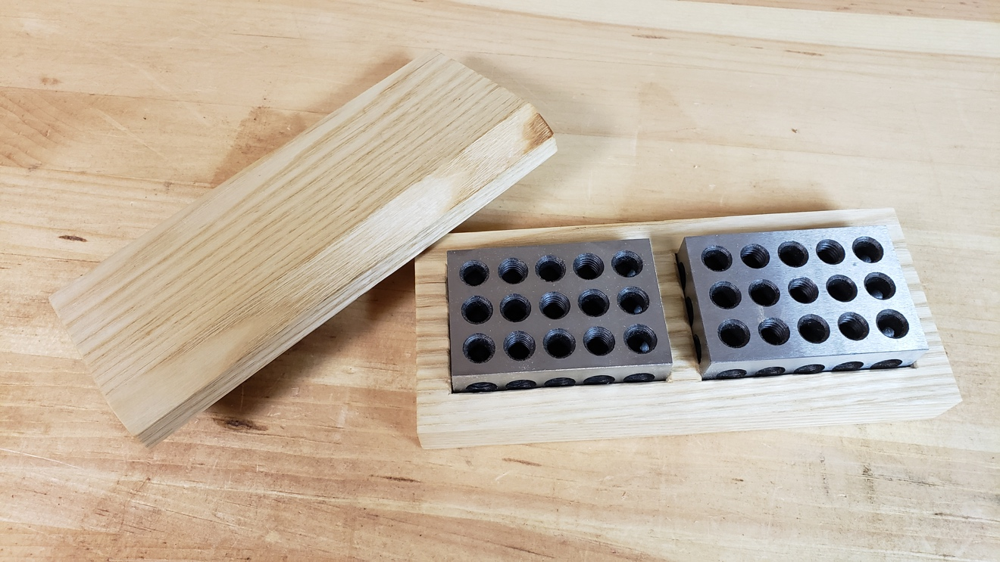

Essential Hand Tools
The workspace you have available and the type of work you do will dictate the tools you purchase. In this section I'll detail the essential tools required for most woodworking without delving into specialty tools. On my first few trips to Lee Valley, when I finally started real woodworking, I went a bit crazy and bought a few things that haven't even come out of the packaging yet. I suggest getting the essential tools and adding tools as needed based on the projects you tackle. There are a couple of benefits to this approach: you won't have to put out a considerable chunk of cash all at once and you'll only get what you'll actually use. You'll probably still end up collecting a bunch of tools, some that may not get used much, but it's part of the process. The goal is to limit the wasted expense and develop an efficient approach to woodworking using select tools. For me, tools are somewhat addictive, as there is a particular attraction to sleek, high-end tools. However, basic tools work equally as well and don't discount making some of your tools.
Also, pay the little bit extra for high-quality tools. Cheap tools are cheap for a reason: they may get the job done but generally aren't worth the additional frustration and poor results. I've found it's worth paying a little more to buy tried and true quality brand tools. Simple tools that are a joy to use and produce great results will be used repeatedly. Overly complicated or cheap tools tend to end up collecting dust and taking up room in your shop.
Don't disregard hand tools. In the modern world, everything has become mechanized and automated. Traditional woodworking hand tools and the techniques to use them have remained the same or similar for hundreds of years in some cases. Modern steel holds an edge longer and planes have become metal-bodied instead of wood, but the function of the tools remains the same and their design and use were perfected long ago. In many cases, hand tools are quicker to use and produce better results while providing hand-crafted characteristics that are sought after in antiques. There are a couple of machines I wouldn't do without, but they aren't necessary to produce exceptional furniture.
Hand Tools

I love tools and have accumulated a considerable number over the years, new and antique. Quality tools solve a lot of problems and keeping them sharp will solve a lot of others. Also, I've learned that the right tool for the job can significantly improve the results and reduce frustration. The small remainder of the problems are alleviated by learning how to use the tools correctly and through practice.
When I first started purchasing hand tools for woodworking, my initial impression was that Lee Valley tools were expensive. However, after more than a decade of buying tools, I find their tools are reasonably priced. The Veritas brand is Canadian and is of high quality. Also, when the Canadian dollar is well below the US dollar, Lee Valley provides one of the only reasonable options to American retailers that on top of exchange would charge for shipping and duty. As an alternative, Amazon.ca is worth checking but usually has a more limited selection of tools than the US site - the price we pay for living in a vast country with a small population.
I've listed several planes as essential. Most modern woodworkers have never used a hand plane, instead four-squaring boards by machines. While I may do the bulk of the grunt work by machine or use a machine to deal with difficult grain, nothing produces a better finished board with little need to sand than a hand plane. Make an effort to learn how to use hand planes, as they are an indispensable part of my work.
As mentioned above, if I had only one machine tool, it would be a table saw. Maybe it's because I don't enjoy using a hand saw, but it is mostly a matter of function, time, and effort. Hand-tool methods provide a greater understanding of wood, grain characteristics, and other factors. Also, hand-tool work is far safer than machine tools and produces less air-born dust. Woodworking is about enjoying the work and the process as much as building furniture. It is certainly not unreasonable to run an unplugged workshop. I find that over time and as I try new techniques, I gravitate more and more to hand-tool work. Working with hand tools is faster, produces better results, and is a more satisfying experience.
There isn't a huge number of tools needed to accomplish fine woodwork. Incredible work is possible with just the essentials, despite the crazy number of tools you see in the workshops depicted in magazines and online. As I've suggested, buy tools as you go. Below is a list of the tools essential for good woodworking and others for consideration for specific tasks.
Note: Brackets () indicates preferred brand.
-
Measuring
- Essential
- 6' and 12' Tape measure (Lee Valley or Starrett)
- 6", 24", 36" metal rulers
- Optional
- Center finding ruler
- Essential
-
Marking
-
Essential
- Pencil (Mechanical if possible, to produce a consistent thin line)
- Marking knife (Stanley Pocket Knife 10-049 or whichever fits your needs)
- 3" and 6" engineer square
- Try square (Bridge City Try Square or an easy project to make)
- Japanese-style layout mitre square
- Marking gauge (Veritas Micro-Adjust Wheel Marking Gauge)
- Sliding bevel (Starrett or Blue Spruce)
-
Optional
- Combination square (4" & 12" Starrett)
- Mortise marking gauge (Veritas Dual Marking Gauge)
-
-
Hammers and Mallets
- Essential
- Claw hammer
- Mallet (Wood is Good WD205 18-Ounce) -- for chisel work
- Optional
- Carpenter's Beech Mallet (make one)
- Dead blow mallet
- Warrington hammer
- Plane hammer (if using wooden or Japanese planes)
- Essential
-
Chisels
- Essential
- 8 or 6 piece bevel edge chisel set (Stanley Sweetheart or Narex)
- Optional
- Mortise chisels (Veritas 1/4" or 3/8" get the most use)
- Japanese dovetail chisel (1/4" or 3/8" get the most use)
- Gouges (Pfeil) -- If carving, there is a wide variety to choose from and selection is a matter of personal preference and the intended work
- Essential
-
Saws
- Essential
- Dovetail or tenon saw (Pax, Bad Axe, Veritas)
- Japanese Ryoba saw
- Coping saw
- Optional
- Rip saw -- essential without a table saw (Pax)
- Crosscut saw -- essential without a table saw (Pax)
- Japanese Dozuki saw -- alternative to the dovetail or tenon saw, Japanese saws cut on the pull stroke
- Bow saw (instead of a jig saw or band saw)
- Essential
-
Planes
- Essential (Lie-Nielsen, Veritas, Stanley)
- Block plane
- No. 4 Smooth plane
- Router plane
- No. 92 Shoulder/chisel plane
- Optional
- No.6 Jack plane or No. 7 jointer plane
- Scrub plane or scrub plan blade for the No. 4 smooth plane
- No.6 Jack plane or No. 7 jointer plane if you only chose one as essential
- Many others to try and explore:
- Moulding planes
- Beading & inlay tools
- Rabbet planes
- Essential (Lie-Nielsen, Veritas, Stanley)
-
Miscellaneous Hand-Tools
- Essential
- Screwdrivers - I only use square (Robertson) screws (Grace)
- Card scraper (Bahco) and burnisher
- No. 50 pattern makers rasp (Nicholson)
- Awl
- Honing guide (Veritas & eclipse type) and sharpening stones (Trend)
- Optional
- 1-2-3 block set
- Additional rasps and files
- Spokeshave (make one, Lee Valley sells a kit)
- Winding Sticks (make them)
- Essential
1-2-3 Blocks
I list 1-2-3 blocks as optional above in the hand tools list, which probably isn't quite the right place for them as they are more of a machine setup aid than a tool. 1-2-3 blocks are convenient for setting up saw fences and stop blocks for cuts precise to the inch. 1-2-3 specifies the dimension of a block, 1" x 2" x 3", when used singly or in pairs the blocks measure from 1" to 6".
Most people haven't heard of 1-2-3 blocks and they are more commonly found in machinist shops but are well suited to woodworking. Small to the inch measurements are often needed and 1-2-3 blocks make for a quick and efficient machine setup. The blocks I have are heavy and if dropped on a workbench or workpiece, they can leave a very deep dent, so I built a box out of a scrap piece of ash to hold them and make it easier to transport.

Clamps
Woodworking clamps come in a wide variety and are an item you will find in large quantities in most woodworking shops. Proper work holding capabilities and glue-ups are essential for producing quality work. A significant component of your workbench design is allowing for proper clamping and securing of the wood while you work. The basic rule of thumb is, you can never have too many clamps. I use multiple sizes of each type of clamp listed below.
-
Cabinet and panel glue-ups
- Jorgensen Cabinet Master Parallel Jaw Bar clamp
- Bessey Parallel clamps
-
General glue-up and clamping
- Dubuque Aluminum Bar clamp - lightweight and the clamps I use the most for glue-ups
- Homemade Cam clamps when lighter clamping pressure is required
- Bar Clamps
-
Work Holding
- Irwin Quick Clamps
- Bessey UniKlamp
- C clamps
- Veritas Wonder Dog
- Gramercy Holdfasts -- quick and versatile work holding